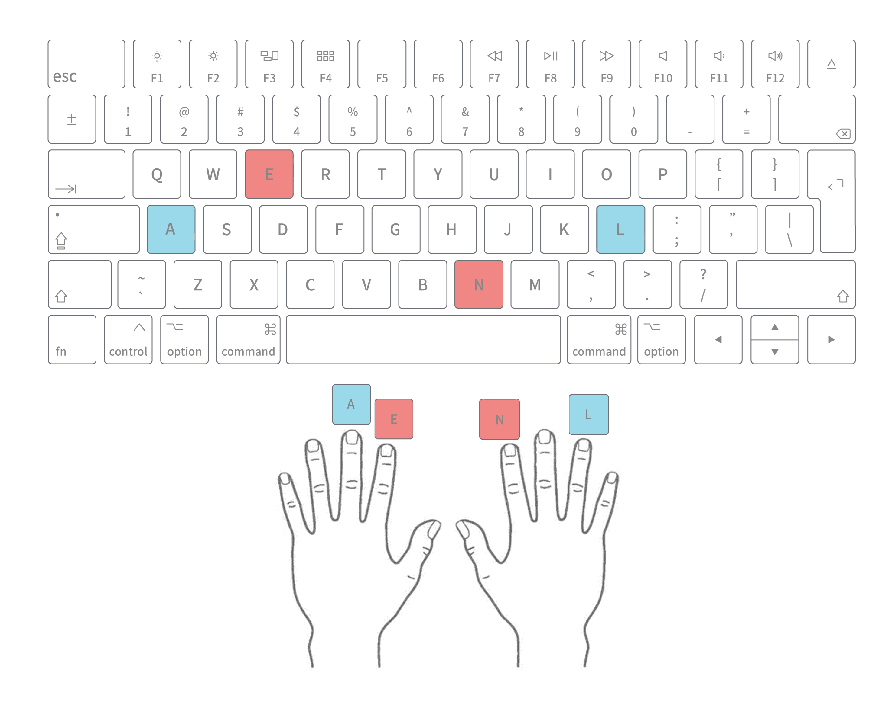

<!DOCTYPE html>
<html>
    <head>
        <title>107_cse_experiment</title>
        <script src='jspsych/dist/jspsych.js'></script>
        <script src='jspsych/dist/plugin-html-keyboard-response.js'></script>
        <script src='jspsych/dist/plugin-html-button-response.js'></script>
        <script src='jspsych/dist/plugin-fullscreen.js'></script>
        <script src='mytrials.js'></script>
        <script src='mytrials_practice.js'></script>
        <script src='jspsych/dist/plugin-html-slider-response.js'></script>
        <script src='jspsych/dist/plugin-survey-text.js'></script>
        <script src='jspsych/dist/plugin-survey-multi-choice.js'></script>
        <script src='jspsych/dist/plugin-call-function.js'></script>
        <link href='jspsych/dist/jspsych.css' rel='stylesheet' type='text/css' />
        <link href='styles.css' rel='stylesheet' type='text/css' />
        <script src="jatos.js"></script>

    </head>
  <body>
    <script>
      const queryString = window.location.search;
        const urlParams = new URLSearchParams(queryString);

   /* jatos.onLoad(() => {
    console.log(jatos.version)}); */

      const jsPsych = initJsPsych({
      /*  on_trial_start: function() {
        const params = jatos.urlQueryParameters || {};
        const jatosdebug = params.debug;
        console.log(jatosdebug)
        if (jatosdebug == 1) {
          probe_duration = 1;
          prime_duration = 1;
          feedback_duration = 1;
          blank_duration = 1;
          probe_stim_duration = 1;
          debug = 1;
      }

      console.log(probe_duration);
    },
 */
    on_finish: () => {
      jatos.endStudyAndRedirect("https://forms.gle/AKSpNSLcB9VzeLEDA", jsPsych.data.get().csv());
    }
  });

//debug mode
  // Get URL query parameters
var debug = false; // set to false for normal timings
console.log("Debug mode:", debug);

const durations = {
    probe_duration: debug ? 1 : 1000,
    prime_duration: debug ? 1 : 133,
    blank_duration: debug ? 1 : 33,
    probe_stim_duration: debug ? 1 : 133
};
console.log("Durations:", durations);
      // initialize jsPsych
    // const jsPsych = initJsPsych()
    const timeline = [];
//creating and storing subject codes
var subj_code; //a variable that later stores a random subject code
    function makeid(length) {
        var result = '';
        var characters = 'ABCDEFGHIJKLMNOPQRSTUVWXYZabcdefghijklmnopqrstuvwxyz0123456789';
        var charactersLength = characters.length;
        for (var i = 0; i < length; i++) {
        result += characters.charAt(Math.floor(Math.random() * charactersLength));
        }
        return result;
        }
    subj_code = makeid(6);
console.log(subj_code);
jsPsych.data.addProperties({subj_code: subj_code}); //adding the subject code to the data object

//welcome message
const welcome = {
            type: jsPsychHtmlButtonResponse,
            stimulus: `
            
            <h2>Üdvözlünk a Metatudomány kutatócsoport vizsgálatában!</h2>
                <p>Egy tudományos kutatásban veszel részt, amelynek vezetője Bognár Miklós, az ELTE Affektív Pszichológia Tanszékének kutatója. 
                A kutatás célja megvizsgálni, hogy különböző ingertípusok miként hatnak a reakcióidőre.</p>
                <h3>Részvétel</h3>
                <p>A kutatásban való részvétel teljesen önkéntes. A vizsgálatot bármikor indoklás nélkül megszakíthatod. Ha bármilyen kérdésed, észrevételed vagy problémád van a kutatással kapcsolatban, írj Bognár Miklósnak a <a href="mailto:bognar.miklos@ppk.elte.hu">bognar.miklos@ppk.elte.hu</a> címre.</p>`,
            choices: ['Tovább']
        };       
//fullscreen//
const fullscreen =  ({
        type: jsPsychFullscreen,
        fullscreen_mode: true,
        message: "<p>A kísérlet teljes képernyős módra vált.</p>",
        button_label: 'Tovább'
        });
//informed consent//
const informed_consent = {
            type:jsPsychHtmlButtonResponse,
            stimulus: `<h2>Beleegyező nyilatkozat</h2>
                <p>Felelősségem teljes tudatában kijelentem, hogy a mai napon az Eötvös Loránd Tudományegyetem, Bognár Miklós kutatásvezető által végzett vizsgálatban</p>
                 <ul>
                    <li>önként veszek részt.</li>
                    <li>a vizsgálat jellegéről, annak megkezdése előtt kielégítő tájékoztatást kaptam.</li>
                    <li>nem szenvedek semmilyen pszichiátriai betegségben.</li>
                    <li>a vizsgálat idején alkohol vagy drogok hatása alatt nem állok.</li>
                 </ul>

                <p>Tudomásul veszem, hogy az azonosításomra alkalmas személyi adataimat bizalmasan kezelik.
                    Hozzájárulok ahhoz, hogy a vizsgálat során a rólam felvett, személyem azonosítására nem alkalmas adatok más kutatók számára is hozzáférhetők legyenek.
                    Fenntartom a jogot arra, hogy a vizsgálat során annak folytatásától bármikor elállhassak. 
                    Ilyen esetben a rólam addig felvett adatokat törölni kell.</p>
                <p>Tudomásul veszem, hogy csak a teljesen befejezett kitöltésért kapok pontot a <em>Pszichológiai kísérletben és tudományos aktivitásban való részvétel</em> nevű kurzuson.</p>

                <p><strong>A kutatásban való részvételem körülményeiről részletes tájékoztatást kaptam, a feltételekkel egyetértek. 
                    Amennyiben egyetértesz a fenti feltételekkel, kattints az "Igen" gombra.</strong></p>`,
            choices: ['Igen', 'Nem'],
            response_ends_trial: true,
            on_finish: function(data) {
                //console.log(blockset[0][0].prime);
            if (data.response == 1) {
                jsPsych.abortExperiment('<p style="text-align: justify; max-width: 800px; margin: auto; font-size: 24px; font-weight: bold">A kísérlet véget ért. Köszönjük, hogy részt vettél a vizsgálatban!</p>');
            }
            }
                        };
//data handling and informed consent
const data_handling = {   
type: jsPsychHtmlButtonResponse,
            stimulus: `<h2 style="text-align: center;">Adatkezelési tájékoztató</h2>
            <p style="text-align: justify; max-width: 800px; margin: auto;">Szigorúan bizalmasan kezelünk minden olyan személyes információt, amit a kutatás keretén belül gyűjtünk össze. 
                A kutatás során nyert adatokat kóddal ellátva biztonságos számítógépeken tároljuk. A kutatás során nyert adatokat összegezzük. 
                Az ELTE PPK Affektív Pszichológia Tanszék Metatudomány Kutatócsoportja, mint adatkezelő, fenti személyes adataidat bizalmasan kezeli, más adatkezelőnek, adatfeldolgozónak nem adja át.
                E tényállás részleteit a <a href="http://metasciencelab.elte.hu/hozzajarulas-adatkezeleshez/" target=_blank">"Hozzájárulás adatkezeléshez"</a> c. dokumentum tartalmazza.</p>

            <p>Az adatkezelésről szóló szabályzásról részletesebben pedig itt tájékozódhatsz:
                <a href="https://ppk.elte.hu/file/Hozzajarulas_adatkezeleshez_melleklet_2018.pdf" target="_blank">Hozzájárulás adatkezeléshez melléklet</a></p>
            <p>A kutatás során nyert személyes adataidat arra használjuk fel, hogy regisztrálhassuk a részvételért járó kurzuspontokat. 
            Az azonosítására alkalmas adatokat (NEPTUN kód) ezután törölni fogjuk. A kezelt adatok a következők:</p>

                <ul>
                    <li>Életkor</li>
                    <li>NEPTUN-kód</li>
                    <li>Nem</li>
                </ul>
            <p>Válaszaid nem lesznek semmilyen módon hozzád köthetők. Az anonimizált adataidat más kutatókkal megosztjuk.</p>
            <p><strong>Kérlek, amennyiben egyetértesz a fenti feltételekkel, és hozzájárulsz a kutatásban való részvételhez, kattints az "Igen" gombra.</strong></p>`,
            choices: ['Igen', 'Nem'],
            response_ends_trial: true,
            on_finish: function(data) {
            if (data.response == 1) {
                jsPsych.abortExperiment('<p style="text-align: justify; max-width: 800px; margin: auto; font-size: 24px; font-weight: bold">A kísérlet véget ért. Köszönjük, hogy részt vettél a vizsgálatban!</p>');
            }
            }
        };
//demographic informations
const age_neptun = {
    type: jsPsychSurveyText,
      questions: [
    {
      prompt: "Hány éves vagy?",
      name: "age",
      required: true,
      validation: function(response) {
        return /^[0-9]+$/.test(response) 
          ? true 
          : "Kérlek, csak számokat adj meg!";
      }
    },
    {
      prompt: "Mi a NEPTUN kódod?",
      name: "neptun",
      required: true,
      validation: function(response) {
        return /^[A-Z0-9]{6}$/.test(response)
          ? true
          : "A NEPTUN kód 6 nagybetűből/számból álljon!";
      }
    }
  ],
  button_label: "Tovább"
};
const gender = {
    type: jsPsychSurveyMultiChoice,
    questions: [
        {prompt: "Melyik a nemmel azonosulsz?", name: "gender", options: ["Férfi", "Nő", "Nem-bináris", "Nem szeretném megosztani"] ,required: true},
],  button_label: "Tovább"
};
const demographic_timeline = [age_neptun, gender]
    console.log(demographic_timeline)
//instructions//
const instructions = {
    type: jsPsychHtmlKeyboardResponse,
    stimulus: `<h2>Instrukciók</h2>
                <p>Ebben a kísérletben arra vagyunk kíváncsiak, hogy miként befolyásolja a büntetés a konfliktusfeldolgozást. 
                A kísérlet során iránymegjelöléseket fogsz olvasni (FEL, LE, JOBB, BAL). Először egy prime inger fog megjelenni a képernyőn, amin egy irány (pl.: „FEL”) lesz olvasható egymás alatt háromszor. 
                Ezt követően megjelenik a célinger, ami vagy azonos („FEL”) vagy ellentétes („LE”) lesz az előtte bemutatott iránnyal.
                A feladatod az lesz, hogy minél gyorsabban és pontosabban eltaláld a célinger irányát a hozzárendelt billentyű megnyomásával.</p> 
                <p>Kérlek helyezd a billentyűzetre a kezedet a képen látható módon:</p>
                <p>A bal középső ujjadat tedd az „A”-ra, ez lesz  a "BAL" irány. A jobb gyűrűsujjadat a „L”-re, ez fogja jelölni a "JOBB" irányt. 
                 A jobb mutató ujjadat helyezd az „N”-re, ez lesz a "LE" irány. Míg a bal mutató ujjadat pedig tedd az „E”-re, ami a "FEL" irányt fogja jelölni! </p>
                
                <p style="text-align: center;"><em>Amennyiben készen állsz a kísérlet megkezdésére, nyomd meg a space billentyűt!</em></p>`,
            choices: [" "],
        };
// ready-to-go stimuli converted from the a randomized JSON
const randomized_stimuli = prime_probe_trials.trials.map((block, block_index) => {
  const formatted_block = block.map(trial => {
    const primeHTML = `<span style="font-size: 40px;">${trial.prime.replace(/\n/g, "<br>")}</span>`;
    let probeColorStyle = "";
    if (trial.color === "red") {
      probeColorStyle = "color: #e60602;"; // red
    } else if (trial.color === "black") {
      probeColorStyle = "color: #000000;"; // black
    }

    const probeHTML = `<span style="font-size: 40px; ${probeColorStyle}">${trial.probe}</span>`;
//dynamic, useful when we'll want to add more colors
    return {
      prime: primeHTML,
      probe: probeHTML,
      congruency: trial.congruency,
      correct_response: trial.correct_response,
      color: trial.color,
      name: trial.name, 
      block: block_index + 1 // label each trial with its block number
    };
  });

  return formatted_block;
});

console.log("Loaded randomized blocks:", randomized_stimuli.length);

// Shuffle and select blocks for the participant
const shuffled_blocks = jsPsych.randomization.shuffle(randomized_stimuli);
const selected_blocks = shuffled_blocks.slice(0, 10);

console.log("Selected 10 randomized blocks:", selected_blocks.length);

const randomized_stimuli_per_participant = selected_blocks;

//trial parameters
/* const queryString = window.location.search;
const urlParams = new URLSearchParams(queryString); */
        
const probe_duration = 1000;
const prime_duration = 133;
const blank_duration = 33;
const probe_stim_duration = 133;
 //defining the trials
    const stimulus = [
     {  
        prime: '<span style="font-size: 40px;">le<br>le<br>le</span>',
        probe: '<span style="font-size: 40px;">fel</span>',
        congruency: 'incongruent',
        correct_response: 'e',
        name: 'black_stimulus'
     },
     {  
        prime: '<span style="font-size: 40px;">fel<br>fel<br>fel</span>',
        probe: '<span style="font-size: 40px;">le</span>',
        congruency: 'incongruent',
        correct_response: 'n',
        name: 'black_stimulus'

     },
     {
        prime: '<span style="font-size: 40px;">le<br>le<br>le</span>',
        probe: '<span style="font-size: 40px;">le</span>',
        congruency: 'congruent',
        correct_response: 'n',
        name: 'black_stimulus'
     },
     {
        
        prime: '<span style="font-size: 40px;">fel<br>fel<br>fel</span>',
        probe: '<span style="font-size: 40px;">fel</span>',
        congruency: 'congruent',
        correct_response: 'e',
        name: 'black_stimulus'
     },
     {
         
        prime: '<span style="font-size: 40px;">bal<br>bal<br>bal</span>',
        probe: '<span style="font-size: 40px;">jobb</span>',
        congruency: 'incongruent',
        correct_response: 'l',
        name: 'black_stimulus'
     },
     {
        prime: '<span style="font-size: 40px;">jobb<br>jobb<br>jobb</span>',
        probe: '<span style="font-size: 40px;">bal</span>',
        congruency: 'incongruent',
        correct_response: 'a',
        name: 'black_stimulus'
     },
     {
        prime: '<span style="font-size: 40px;">bal<br>bal<br>bal</span>',
        probe: '<span style="font-size: 40px;">bal</span>',
        congruency: 'congruent',
        correct_response: 'a',
        name: 'black_stimulus'
     },
     {
        prime: '<span style="font-size: 40px;">jobb<br>jobb<br>jobb</span>',
        probe: '<span style="font-size: 40px;">jobb</span>',
        congruency: 'congruent',
        correct_response: 'l',
        name: 'black_stimulus'
     }
    ]
    const red_stimulus = [
     {
        prime: '<span style="font-size: 40px;">le<br>le<br>le</span>',
        probe: '<span style="font-size: 40px; color: #e60602;">fel</span>',
        congruency: 'incongruent',
        correct_response: 'e',
        name: 'red_stimulus'
     },
     {  
        prime: '<span style="font-size: 40px;">fel<br>fel<br>fel</span>',
        probe: '<span style="font-size: 40px; color: #e60602;">le</span>',
        congruency: 'incongruent',
        correct_response: 'n',
        name: 'red_stimulus'

     },
     {
        prime: '<span style="font-size: 40px;">le<br>le<br>le</span>',
        probe: '<span style="font-size: 40px; color: #e60602;">le</span>',
        congruency: 'congruent',
        correct_response: 'n',
        name: 'red_stimulus'
     },
     {
        
        prime: '<span style="font-size: 40px;">fel<br>fel<br>fel</span>',
        probe: '<span style="font-size: 40px; color: #e60602;">fel</span>',
        congruency: 'congruent',
        correct_response: 'e',
        name: 'red_stimulus'
     },
     {
         
        prime: '<span style="font-size: 40px;">bal<br>bal<br>bal</span>',
        probe: '<span style="font-size: 40px; color: #e60602;">jobb</span>',
        congruency: 'incongruent',
        correct_response: 'l',
        name: 'red_stimulus'
     },
     {
        prime: '<span style="font-size: 40px;">jobb<br>jobb<br>jobb</span>',
        probe: '<span style="font-size: 40px; color: #e60602;">bal</span>',
        congruency: 'incongruent',
        correct_response: 'a',
        name: 'red_stimulus'
     },
     {
        prime: '<span style="font-size: 40px;">bal<br>bal<br>bal</span>',
        probe: '<span style="font-size: 40px; color: #e60602;">bal</span>',
        congruency: 'congruent',
        correct_response: 'a',
        name: 'red_stimulus'
     },
     {
        prime: '<span style="font-size: 40px;">jobb<br>jobb<br>jobb</span>',
        probe: '<span style="font-size: 40px; color: #e60602;">jobb</span>',
        congruency: 'congruent',
        correct_response: 'l',
        name: 'red_stimulus'
     }
    ]
//fixation//
  //fixation//
   const fixation = {
    type: jsPsychHtmlKeyboardResponse,
    stimulus: '<div style="font-size:60px;">+</div>',
    choices: "NO_KEYS",
    trial_duration: debug
        ? 1
        : Math.random() * (600 - 400) + 400,
        data : { task : 'fixation'}
   }
//prime//
   const prime_trial = {
    type: jsPsychHtmlKeyboardResponse,
    stimulus: jsPsych.timelineVariable('prime'),
    choices: "NO_KEYS",
	trial_duration: durations.prime_duration,
   function(){return durations.prime_duration},
    data:{
        task:"prime"
    }
}
//blank//
   const blank = {
    type: jsPsychHtmlKeyboardResponse,
    stimulus: ' ',
    choices: "NO_KEYS",
	trial_duration: durations.blank_duration,
   function(){return durations.blank_duration},
    data:{
        task:"blank"
    }
}
//probe//
    const probe_trial = {
    type: jsPsychHtmlKeyboardResponse,
    stimulus: jsPsych.timelineVariable('probe'),
   choices: ["a", "e", "l", "n"],
    stimulus_duration: function() {
        console.log("stimdur:", durations.probe_stim_duration);
        return durations.probe_stim_duration; 
    },
    trial_duration: durations.probe_duration, 
    response_ends_trial: false,   
    data: {
        correct_response: jsPsych.timelineVariable('correct_response'),
        task: "probe",
        congruency: jsPsych.timelineVariable('congruency'),
        name: jsPsych.timelineVariable('name')
    },
    on_finish: function(data) {
        console.log("Response data:", data);
        console.log("Key pressed:", data.response);
        data.correct = data.response === data.correct_response;
    }
};

//PRACTICE: red trials can only be followed by black trials
const practice_instructions = {
        type: jsPsychHtmlKeyboardResponse,
        stimulus: `<h2>Gyakorló blokk</h2>
            <p>A kísérlet megkezdése előtt egy rövid gyakorló blokk következik. Ebben a blokkban nem vonunk le pénzt a hibás válaszokért, azonban törekedj a minél gyorsabb és pontosabb válaszadásra! <br>
            Ha készen állsz, nyomj meg egy tetszőleges billentyűt a kezdéshez.</p>`
}

const practice_intermission = {
  type: jsPsychHtmlKeyboardResponse,
  stimulus: function() {
    // initial display with timer placeholder
    return `<div style="text-align: center; max-width: 800px; margin: auto; font-size: 24px">
      <p>Még egy rövid gyakorló blokk következik.<br>
      Ha készen állsz, nyomj meg egy tetszőleges billentyűt a kezdéshez.</p>
      <p><strong>A blokk automatikusan elindul 2 perc múlva.</strong></p>
      <p id="timer" style="font-size: 28px; color: darkred;">Kezdés: 2:00</p>
    </div>`;
  },
  choices: "ALL_KEYS",
  trial_duration: 120000, // 2 minutes
  on_load: function() {
    let timeLeft = 120; // seconds
    const timerDisplay = document.getElementById('timer');
    const countdown = setInterval(() => {
      timeLeft--;
      const minutes = Math.floor(timeLeft / 60);
      const seconds = timeLeft % 60;
      timerDisplay.textContent = `Kezdés: ${minutes}:${seconds.toString().padStart(2, '0')}`;
      if (timeLeft <= 0) clearInterval(countdown);
    }, 1000);
  }
};

const practice_end = {
  type: jsPsychHtmlKeyboardResponse,
  stimulus: `
    <div style="
      padding-bottom: 350px;   /* <-- increase this value to move text higher */
      max-width: 800px; 
      margin: 40px auto; 
      font-size: 24px;
    ">
      <p style="
        text-align: justify;
        margin: 0;
      ">
        A gyakorló rész véget ért. A kísérleti blokkok következnek. 
        Ha készen állsz, nyomj meg egy tetszőleges billentyűt a kezdéshez.
        <span style="display:inline-block; width:100%;"></span>
      </p>
    </div>

    
  `,
  choices: "ALL_KEYS"
};

const randomized_prac_stimuli = prime_probe_trials_prac.trials.map((block, block_index) => {
const formatted_prac_block = block.map(trial => {
const primeHTML = `<span style="font-size: 40px;">${trial.prime.replace(/\n/g, "<br>")}</span>`;
    let probeColorStyle = "";
    if (trial.color === "red") {
      probeColorStyle = "color: #e60602;"; // red
    } else if (trial.color === "black") {
      probeColorStyle = "color: #000000;"; // black
    }
const probeHTML = `<span style="font-size: 40px; ${probeColorStyle}">${trial.probe}</span>`;

    return {
      prime: primeHTML,
      probe: probeHTML,
      congruency: trial.congruency,
      correct_response: trial.correct_response,
      color: trial.color,
      name: trial.name, 
      block: block_index + 1 // label each trial with its block number
    };
  });

  return formatted_prac_block;
});

console.log("Loaded randomized practice blocks:", randomized_prac_stimuli.length);

const shuffled_prac_blocks = jsPsych.randomization.shuffle(randomized_prac_stimuli);
const selected_prac_blocks = shuffled_prac_blocks.slice(1, 2);


const randomized_prac_stimuli_per_participant = selected_prac_blocks

const prac_cutoff = 1000;
const feedback_duration = 700

const prac_feedback = {
  type: jsPsychHtmlKeyboardResponse,
  
  stimulus: function() {
    const last = jsPsych.data.getLastTrialData().values()[0];
    
    if (last.rt === null || last.rt > prac_cutoff) {
      // too slow
      return "<div style='font-size: 35px; color: black;'>Túl lassú!</div>";
    } else if (!last.correct) {
      // incorrect
      return "<div style='font-size: 35px; color: black;'>Hibás!</div>";
    } else {
      // correct & fast → show nothing
      return "<div></div>";
    }
  },

  choices: "NO_KEYS",

  trial_duration: function() {
    const last = jsPsych.data.getLastTrialData().values()[0];
    
    if (last.rt === null || last.rt > prac_cutoff || !last.correct) {
      return feedback_duration;   // show feedback for errors or slow responses
    } else {
      return 33;                  // short blank for correct & fast responses
    }
  }
};

const prac_feedback_conditional = {
  timeline: [prac_feedback],
  conditional_function: function() {
    var last = jsPsych.data.getLastTrialData().values()[0];
    // show feedback ONLY if incorrect or too slow
    return !(last.correct && last.rt <= prac_cutoff);
  }
};

const practice_blocks = randomized_prac_stimuli_per_participant.map((block_stimuli, i) => {
  return {
    timeline: [
      {
        timeline: [fixation, prime_trial, blank, probe_trial, prac_feedback],
        timeline_variables: block_stimuli,
        randomize_order: false,
        loop_function: function(data) {
	        if(debug == 0){
            console.log(data);
            var correct_trials = data.filter({task: "probe",correct: true}).count();
            console.log(correct_trials);
            var total_trials = data.filter({task: "probe"}).count();
            
            if (total_trials > 0) {
                var accuracy = (correct_trials / total_trials) * 100;
                console.log("Accuracy:", accuracy + "%");
                if (accuracy >= 80) {
                    return false;
                } else {
                    return true;
                }
            }
        }else{
      return false;
       }
      }}
    ],
    on_timeline_finish: function() {
      const block_data = jsPsych.data.get().last(block_stimuli.length).values();

      for (let t = 1; t < block_data.length; t++) {
        const prev = block_data[t - 1];
        const curr = block_data[t];

        //extracting name and color
        const prevName = prev.name || "";
        const currName = curr.name || "";
        const prevColor = prev.color || "";
        const currColor = curr.color || "";

        // consecutive red trials check
        if (prevColor === "red" && currColor === "red") {
          console.error(
            `Two consecutive red trials detected in block ${i + 1} (trials ${t} & ${t + 1}): ${prevName} -> ${currName}`
          );
          jsPsych.endExperiment("Experiment stopped: consecutive red trials detected.");
          return;
        }

        //directional orientation alternation check
        const prevIsVertical = prevName.includes("vertical");
        const currIsVertical = currName.includes("vertical");
        const prevIsHorizontal = prevName.includes("horizontal");
        const currIsHorizontal = currName.includes("horizontal");

        if ((prevIsVertical && currIsVertical) || (prevIsHorizontal && currIsHorizontal)) {
          console.error(
            `Orientation alternation broken in block ${i + 1} (trials ${t} & ${t + 1}): ${prevName} -> ${currName}`
          );
          jsPsych.endExperiment("Experiment stopped: two consecutive trials share the same orientation.");
          return;
        }
      }

      console.log(`Block ${i + 1} passed red–red and H–V alternation checks.`);
    }
  };
});


  /*loop_function: function(data) {
	if(debug == 0){
        console.log(data);
        var correct_trials = data.filter({task: "probe",correct: true}).count();
        console.log(correct_trials);
        var total_trials = data.filter({task: "probe"}).count();
        
        if (total_trials > 0) {
            var accuracy = (correct_trials / total_trials) * 100;
            console.log("Accuracy:", accuracy + "%");
            if (accuracy >= 80) {
                return false;
            } else {
                return true;
            }
          
        }
    }else{
	return false;
    }
    }
}, */

const all_practice = {
    timeline: [practice_instructions, practice_blocks, practice_intermission, practice_blocks, practice_end]
  }   

//experimental blocks
const experimental_blocks = randomized_stimuli_per_participant.map((block_stimuli, i) => {
  return {
    timeline: [
      {
        type: jsPsychHtmlKeyboardResponse,
        stimulus: `
          <div style="text-align:center; font-size:24px;">
            <h2>Blokk ${i + 1} kezdődik</h2>
          </div>`,
        choices: "NO_KEYS",
        trial_duration: 2000
      },
      {
        timeline: [fixation, prime_trial, blank, probe_trial],
        timeline_variables: block_stimuli,
        randomize_order: false
      }
    ],

    on_timeline_start: () => {
      console.log(`Starting Block ${i + 1}`);
    },

    on_timeline_finish: function() {
      const block_data = jsPsych.data.get().last(block_stimuli.length).values();

      for (let t = 1; t < block_data.length; t++) {
        const prev = block_data[t - 1];
        const curr = block_data[t];

        //extracting name and color
        const prevName = prev.name || "";
        const currName = curr.name || "";
        const prevColor = prev.color || "";
        const currColor = curr.color || "";

        // consecutive red trials check
        if (prevColor === "red" && currColor === "red") {
          console.error(
            `Two consecutive red trials detected in block ${i + 1} (trials ${t} & ${t + 1}): ${prevName} -> ${currName}`
          );
          jsPsych.endExperiment("Experiment stopped: consecutive red trials detected.");
          return;
        }

        //directional orientation alternation check
        const prevIsVertical = prevName.includes("vertical");
        const currIsVertical = currName.includes("vertical");
        const prevIsHorizontal = prevName.includes("horizontal");
        const currIsHorizontal = currName.includes("horizontal");

        if ((prevIsVertical && currIsVertical) || (prevIsHorizontal && currIsHorizontal)) {
          console.error(
            `Orientation alternation broken in block ${i + 1} (trials ${t} & ${t + 1}): ${prevName} -> ${currName}`
          );
          jsPsych.endExperiment("Experiment stopped: two consecutive trials share the same orientation.");
          return;
        }
      }

      console.log(`Block ${i + 1} passed red–red and H–V alternation checks.`);
    }
  };
});

//intermission between blocks
const block_intermission = {
  type: jsPsychHtmlKeyboardResponse,
  stimulus: function() {
    return `
      <div style="text-align: center; max-width: 800px; margin: auto; font-size: 24px">
        <p><strong>Blokk vége.</strong></p>
        <p>Pihenj egy kicsit, majd nyomj meg egy billentyűt a következő blokk kezdéséhez.</p>
        <p><strong>A következő blokk automatikusan elindul 2 perc múlva.</strong></p>
        <p id="timer" style="font-size: 28px; color: darkred;">Kezdés: 2:00</p>
      </div>`;
  },
  choices: "ALL_KEYS",
  trial_duration: 120000,
  on_load: function() {
    let timeLeft = 120;
    const timerDisplay = document.getElementById('timer');
    const countdown = setInterval(() => {
      timeLeft--;
      const minutes = Math.floor(timeLeft / 60);
      const seconds = timeLeft % 60;
      timerDisplay.textContent = `Kezdés: ${minutes}:${seconds.toString().padStart(2, '0')}`;
      if (timeLeft <= 0) clearInterval(countdown);
    }, 1000);
  },
  data: { task: 'intermission' }
};
//full experiment timeline
const full_experiment = [];

//add each block followed by an intermission (except after the last one)
experimental_blocks.forEach((block, index) => {
  full_experiment.push(block);
  if (index < experimental_blocks.length - 1) {
    full_experiment.push(block_intermission);
  }
});

//end screen
const experiment_end = {
  type: jsPsychHtmlButtonResponse,
  stimulus: `
      <h2>Kísérlet vége</h2>
      <h3>Köszönjük, hogy részt vettél a vizsgálatban!</h3>
      
      <p>Hogy megkaphasd a pontjaidat, nyomd meg a "Vége" gombot</p>`,
  choices: ["Vége"],
};

timeline.push(welcome, fullscreen, informed_consent, data_handling, demographic_timeline, instructions,all_practice, full_experiment,experiment_end);
jsPsych.run(timeline) 
    </script>
  </body>
</html>
